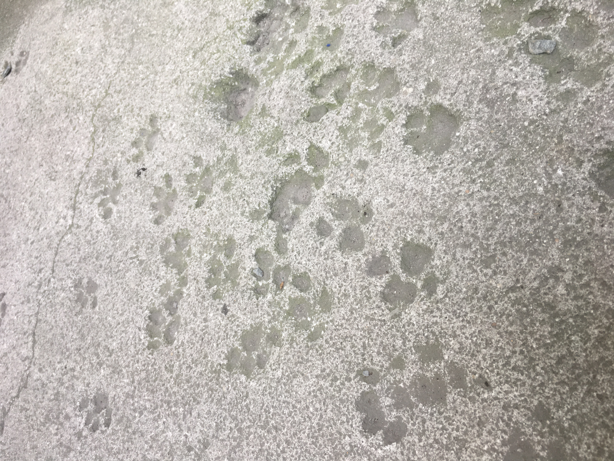
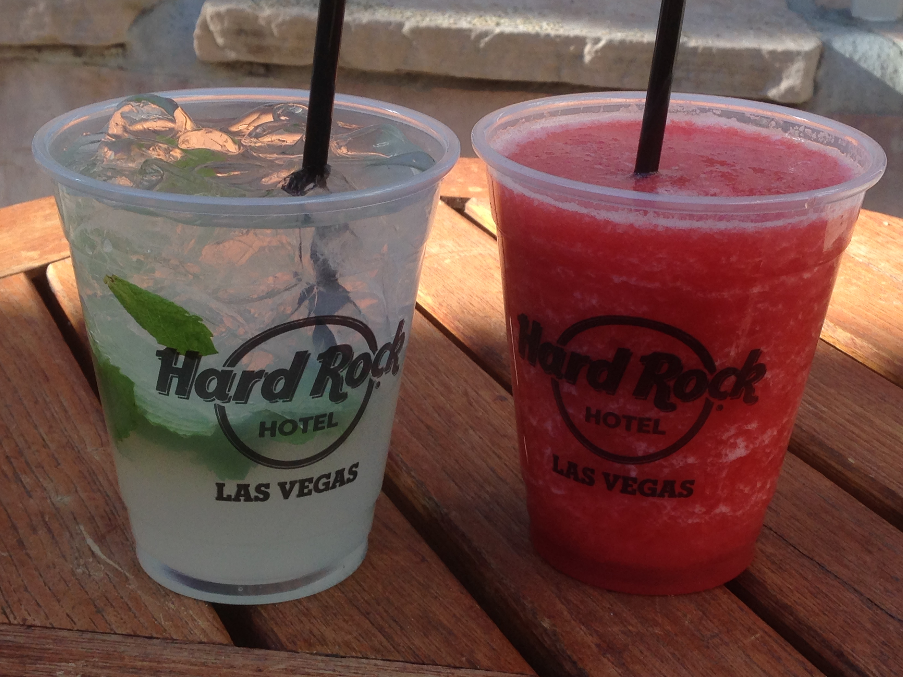
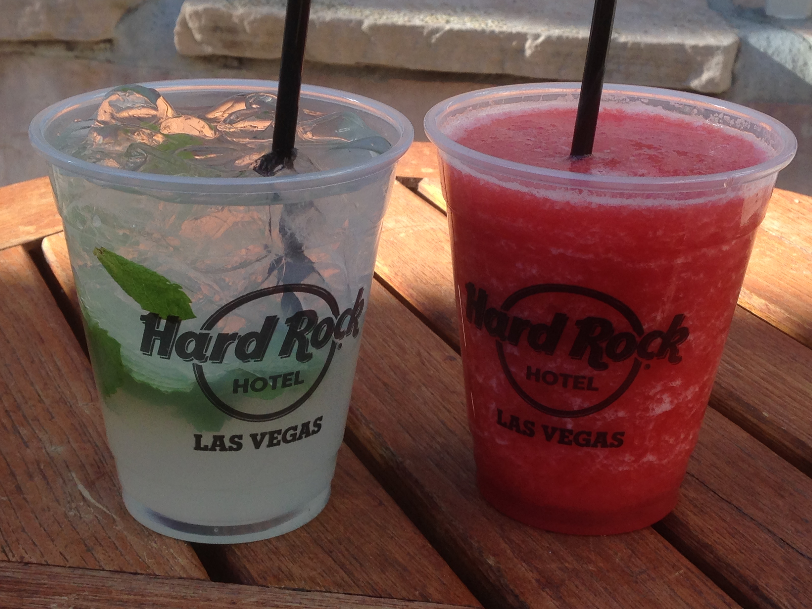
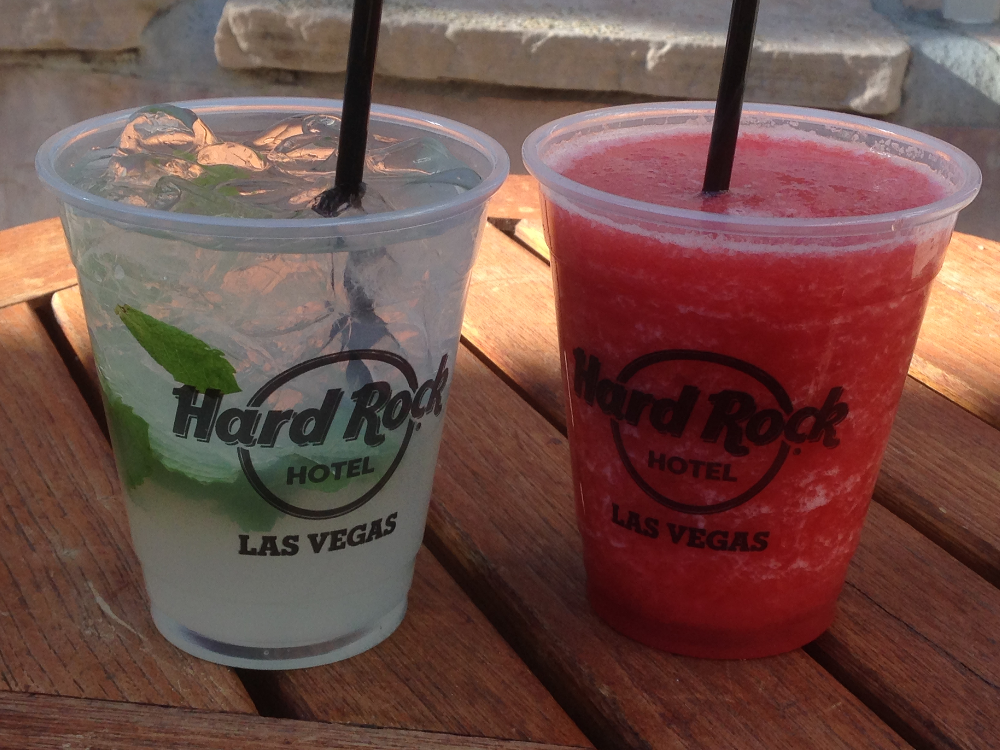
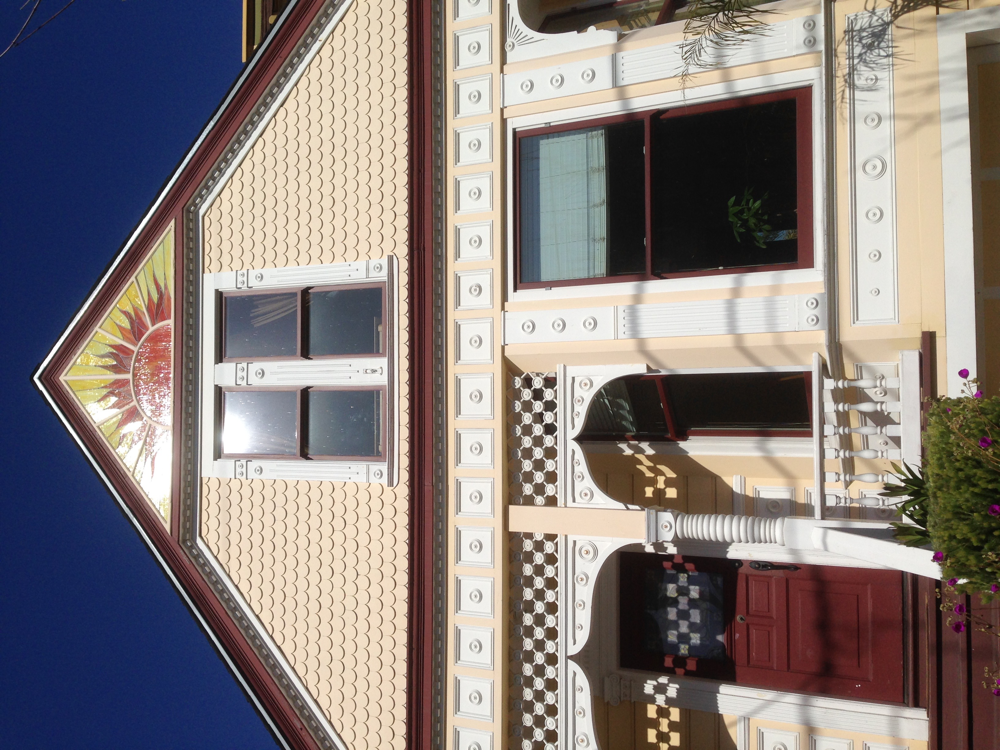

Tervetuloa mukaan matkalle!
Teksti by Saara S., Toukokuu 19, 2025.
Aloitus
Minulla on ollut lapsuudesta saakka suuri haave päästä käymään Yhdysvalloissa. Vuonna 2014 pääsin toteuttamaan tämän haaveen vihdoin ja viimein. Kiersin silloin rannikolta rannikolle lähtien San Fransiscosta ja päätyen New Yorkiin. Toinen mahdollisuus vierailla maassa tapahtui vuonna 2017, jolloin keskiössä oli itärannikko aina New Yorkista Key Westiin. Kokosin tähän mieleenpainuvimmat kohteet molemmista reissuista. Mukana saattaa olla muutama vinkki. Tervetuloa matkalla mukaan, toivottavasti viihdyt!

 


